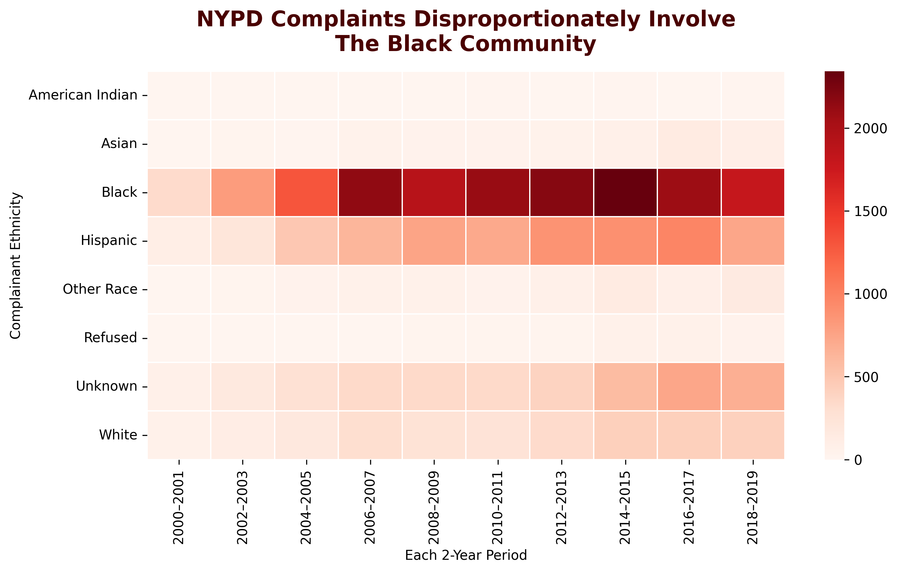

Complaints against the NYPD disproportionately involve Black complainants.
FOR the Proposition

Caption: The heatmap highlights how complaint intensity remains consistently highest for Black complainants across two-year periods.
Design Decisions and Rationale
Used a warm red color palette to draw attention to areas of high complaint volume.
Grouped years into 2-year blocks to smooth noise and emphasize long-term patterns.
Alphabetical ordering and consistent scale keep the layout clear while color conveys disparity.
AGAINST the Proposition
Caption: The ratio of Black to All Other complainants shows a gradual decline from 2010–2019, suggesting improvement in racial disparity.
Design Decisions and Rationale
Used soft blue tones to create a calm, neutral aesthetic and minimize emotional impact.
Focused on 2010–2019 to highlight a modern downward trend.
Plotted as a ratio for year-to-year comparison, reducing emphasis on overall complaint volume.
Final Reflection
These visualizations demonstrate how design choices—such as color, time range, and data normalization—can significantly alter interpretation. The heatmap’s intensity implies persistent racial disparity, while the line chart’s narrowing ratio suggests gradual improvement. Both are true within their contexts, yet each omits critical background information such as substantiation rates and population baselines. The exercise underscores how easily visualization framing can persuade, even with the same underlying data.
Charts created with matplotlib and seaborn; exported as PNG files.